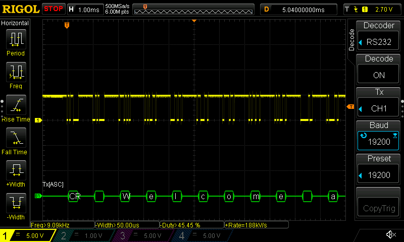
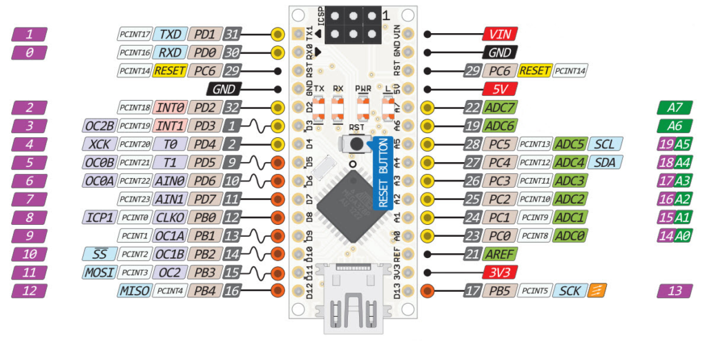
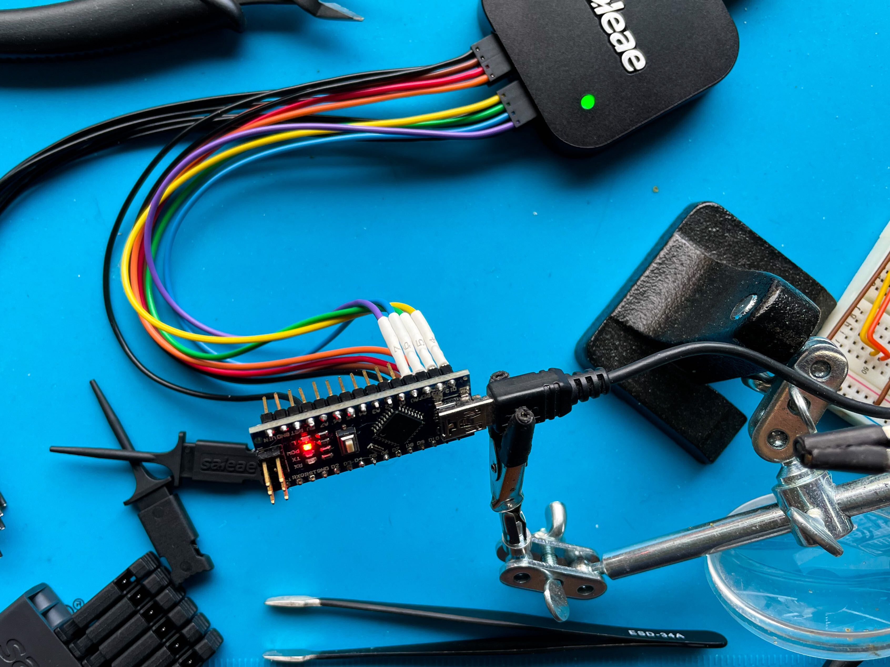
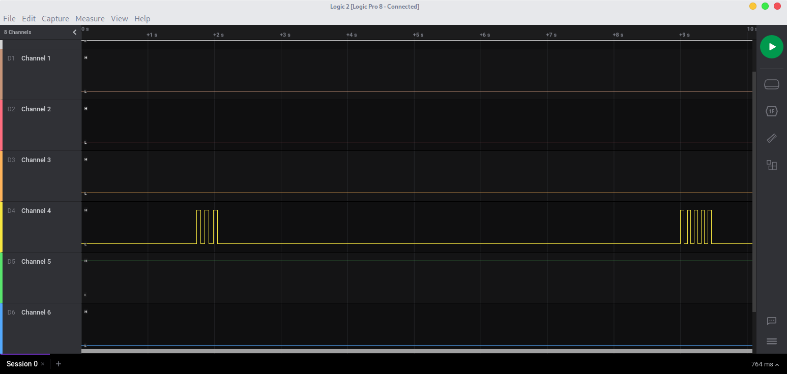
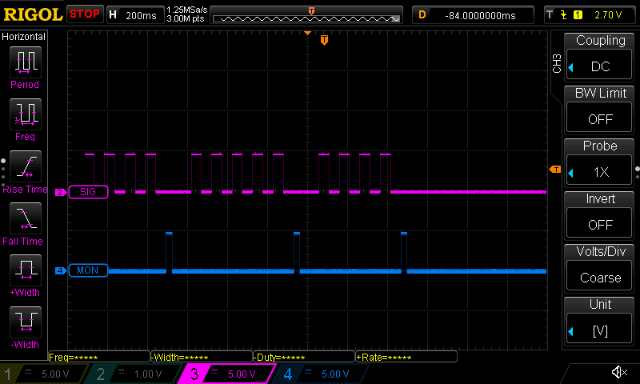
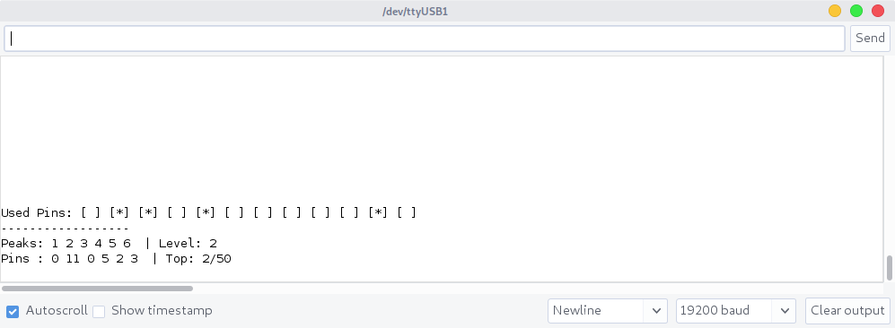
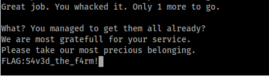

Reverse Engineering an unknown digital protocol: RHME2, Whac a mole
Who doesn’t like a classic game of whac-the-mole? This time the moles infiltrated deep into the backyard of a poor farmer’s family. The moles are ruining the crops, which the farmer desperately needs to provide for his wife and 2 children. Any traveler able to help him by extinguishing the darn things will be greatly rewarded. Are you up for the task?
So I wanted to do some more hardware based CTF, especially now in covid times I don’t get out as much to client sites doing some of these things on site. So I picked up yet another Riscure RHME2 CTF binary and tossed it into one of my Arduino Nano boards to have a go at it! This time I’ll tackle the challenge Whack a Mole (links are down below) which is a (at the time of writing) 5 year old challenge, but it’s been on my todo list for a while.
Setup
So the Bill of Materials needed are:
- 2x Arduino Nano
- Breadboard
- Various cables for the breadboard
- Digital Oscilloscope with at least one channel (I used a Rigol DS1054Z)
- Optional: Logic Analyzer
Lets kick things off by actually loading the binary onto our target arduino. The writing of the binary will be done by using avrdude, which is available in most package repos.
root@linux:~# wget https://github.com/Riscure/Rhme-2016/raw/master/challenges/binaries/whac_the_mole/whac_the_mole.hex
root@linux:~# avrdude -c arduino -p atmega328p -p /dev/<NANO Device> -b115200 -u -V -U flash:w:whac_the_mole.hex
Doing that should produce a successful flash of the device with the correct binary. The next step is to power up the board and check if there’s any data on the serial connection. But to do that we also need to find the baudrate of the device, which can be done by either trying and getting lucky, or using the oscilloscope to measure the peaks and data rate that is sent. But before actually hooking up the scope to the circuit,I highly recommend looking through EEVblogs guide on “How NOT to blow up your oscilloscope”, first and last warning!
So just to give the low down on serial communication. Devices communicate over a serial connection to other devices, it does so in binary representation by managing Peaks and Valleys on a digital connection. The Digital connection have two states:
- +5/3.3v represent a 0
- +/-0v represent a 1
That means when hooking up a oscilloscope to a serial connection, we’ll see a natural +5v baseline on the screen. It also means that when we are triggering the probe in order to pause the data on the screen, we need to trigger on a downward slope. So hooking up the scope to the target Tx pin (Nano Pin0), setting the trigger to a -2.5v downward slope on the correct probe and resetting the arduino board we get presented with a fixed image of a serial transmission. Looking at the oscilloscopes automagic measurements, it’s quite easy to determine a Rate of 192kV/s, so a baudrate of 19200 will work perfectly. Another great feature of the DS1054Z and many other digital oscilloscopes is that it can do RS232 decode directly in the device. Plugging in the known baudate to the Decode function outputs some of the sent strings.

First Connection
Having that knowledge that we have the correct baudrate, we can use screen /dev/<NANO Target> 19200 or whichever fancy serial program that’s available. Once connected we get presented by the following screen:
root@linux:~# screen /dev/ttyUSB0 19200
Welcome adventurer.
We are glad you are here. We are in dire need of assistance.
A huge family of moles have found their way into our yard.
We need you to get rid of all 20 of them.
If you manage to extinguish them all we will greatly reward you.
When you are ready, please step into the yard by pressing <Enter>
Ready?
Get set!
GO!
You missed it. Try again by pressing <Enter>.
Pressing enter at the screen just gives the following message over and over again, and the program does not seem to accepts characters or and form of input over the Serial connection. So it is time to start exploring other options!
The name of the challenge, refer to the physical game of Whack the mole! which is a carnival game where heads pop up through holes, and the objective is to hit those in order to score points. Ok so that’s easy enough if you’d know where to hit the moles.

Looking at the schematics of the Arduino Nano, we can identify that there are a bunch of digital pins. 0/1 are dedicated to Tx and Rx for the Serial, 2-13 are dedicated Digital pins, and 14-19 are analog pins. Lets hook up a Logic Analyzer to the digital pins in order to see if there’s any other signals.

Hooking up the Saleae Logic to the 2-8 pins gave no results after pressing enter on the Serial Prompt, but taking the next set of pins 9-13 and A0-A2 resulted in some traffic on the yellow cable, Channel 4, which was connected to the pin D13.

Making some assumptions
While further investigating the board and signals, I went in with a couple assumptions
- The Signals on pin D13, reflected the pin to hit
- The pin should be one of the other Digital pins 2-12
- There are multiple levels and not just one hit that has to be made
- The signal should be received within 100ms from the peak
While I was successful in making one or two hits and manually mapping out the pins that needed to be hit, each time that the board target resets the pins changed. Which pushed me in the direction of needing to do some proper logic on the micro controller in order to automate the process as much as possible.

Codesplaining
In order to successfully automate the process of retrieving the flag there are some code requirements:
- Be able to bruteforce multiple pins
- The amount of observable peaks are between 1-6
- Automated process of verifying and resetting the board
- The time to hit should be ~100ms
So in order to solve the resetting and verifying problem, I relied on using the SoftwareSerial.h library, as that can create a Software emulated Serial Tx/Rx out of any other pin. The idea was to interpret the messages that the target board was echoing depending if you hit a mole or not. Where the different states are:
- You whacked it > Success
- You missed it > fFail
- Welcome > Start of the game
With that set, came the problem of number 1, to bruteforce the pins. We know from the research that there are pins 2-12 as input on the target board to hit, and there are a maximum of 6 peaks on each iteration.
int candidates[6] = {2, 2, 2, 2, 2, 2};
int pins[6] = {0, 0, 0, 0, 0, 0};
void peak(int pin){
digitalWrite(pin, HIGH);
delay(PEAKDELAY);
digitalWrite(pin, LOW);
}
void whack(int pin){
digitalWrite(PIN_MONITOR, HIGH);
if (pins[pin] != 0) {
peak(pins[pin]);
} else {
peak(candidates[pin]);
}
digitalWrite(PIN_MONITOR, LOW);
}
The bruteforce function simply checks the amount of peaks that are registered on the input D13 pin, which corresponds to the array pins[n]. If the pin[peak] is 0 try the pin in candidates[peak] in this case, it starts by sending a peak out on pin D2. If the hit missed, the function miss() will increase candidates[peak] with one, so that the next time the program registers the same peak it will try pin D3. If however the peak would be a hit, the method hit() will be called and register pin D2 into the pins[n] table to be remembered for the future identical number of peaks.

Running the code should eventually bruteforce each pin position, and print the flag in your terminal connected to the target!

Source Code
Putting all the code together should look something like:
#include
#define MAXPINS 12
#define PEAKDELAY 30
#define BAUDRATE 19200
#define SER_TX 18
#define SER_RX 19
#define PIN_READ 13
#define PIN_MONITOR 14
int state = 0;
int peak_count;
int peak_state;
int top_level = 1;
int current_level = 1;
char inData;
String strBuf;
String str;
unsigned long peak_start = 0;
String pins_used[12] = {"[ ]","[ ]","[ ]","[ ]","[ ]","[ ]","[ ]","[ ]","[ ]","[ ]","[ ]","[ ]"};
int candidates[6] = {2, 2, 2, 2, 2, 2};
int pins[6] = {0, 0, 0, 0, 0, 0};
SoftwareSerial target(SER_RX, SER_TX);
void setup() {
Serial.begin(BAUDRATE);
pinMode(PIN_READ, INPUT);
pinMode(PIN_MONITOR, OUTPUT);
digitalWrite(PIN_MONITOR, LOW);
for (int i=2;i<MAXPINS+1;i++){
pinMode(i, OUTPUT);
digitalWrite(i, LOW);
}
Serial.println("Ready");
target.begin(19200);
}
void set_used_pins(int pin){
if (pins_used[pin-1] == "[ ]")
pins_used[pin-1] = "[*]";
}
void print_status(){
for (int i=0;i<2;i++) Serial.println("\r");
Serial.print("Used Pins: ");
for (int i=0;i<12;i++){
Serial.print(pins_used[i]);
Serial.print(" ");
}
Serial.println("\r");
Serial.println("------------------");
Serial.print("Peaks: 1 2 3 4 5 6 ");
Serial.print("| Level: ");
Serial.println(current_level);
Serial.print("Pins : ");
for (int i=0;i<6;i++){
Serial.print(pins[i]);
Serial.print(" ");
}
Serial.print(" | Top: ");
Serial.print(top_level);
Serial.println("/50");
}
void peak(int pin){
digitalWrite(pin, HIGH);
delay(PEAKDELAY);
digitalWrite(pin, LOW);
}
void whack(int pin){
digitalWrite(PIN_MONITOR, HIGH);
if (pins[pin] != 0) {
peak(pins[pin]);
} else {
peak(candidates[pin]);
}
digitalWrite(PIN_MONITOR, LOW);
}
void hit(){
if (pins[peak_state] == 0){
int candidate = candidates[peak_state];
set_used_pins(candidate);
pins[peak_state] = candidate;
}
print_status();
current_level++;
if (current_level > top_level)
top_level++;
}
void miss(){
candidates[peak_state] = candidates[peak_state] + 1;
if (candidates[peak_state] > 12){
Serial.println("INVALID PIN.... Resetting to 2");
candidates[peak_state] = 2;
}
print_status();
current_level = 0;
}
void loop() {
while(target.available()){
inData = target.read();
strBuf += inData;
}
if (strBuf.endsWith(F("\n"))){
strBuf.trim();
if (strBuf.length() > 0) { str = strBuf; }
strBuf = "";
}
if (str.indexOf(F("missed")) >= 0) {
miss();
str = "";
target.write("\r");
} else if (str.indexOf(F("whacked")) >= 0) {
hit();
str = "";
} else if (str.indexOf(F("When you are ready")) >= 0) {
Serial.println("Start the game");
delay(500);
print_status();
str = "";
target.write("\r");
}
int value = digitalRead(PIN_READ);
if (value != state){
state = value;
if (state == 1){
peak_start = millis();
peak_count++;
}
}
if (state == 0 && peak_start && peak_start + 100 < millis()){
peak_state = peak_count - 1;
whack(peak_state);
peak_start = 0;
peak_count = 0;
}
}
Resources
The complete source code and fritzing scheme can be found at:
Fritzing - scheme.fzz
Arduino Sketch - whacker.ino